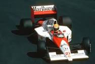

Entre os esportes automobilísticos a Fórmmula 1 deve ser um dos mais conhecidos, logo em seguida vemos stock car, fórmula drift, corridas de kart e outros.
Na fórmula 1 um brasileiro chamado Ayrton Senna faleceu em 1994 em uma corrida em Ímola na Italia, é considerado até hoje o melhor de todos os tempos. A primeira corrida oficial de F1 aconteceu um mês depois, no dia 13 de maio, no circuito de Silverstone, na Inglaterra, e teve como vencedor o italiano Nino Farina, pilotando um Alfa Romeo. Nino Farina, Juan Manuel Fangio e Alberto Ascari, outro italiano, dominaram a Fórmula 1 no início da década de 1950.
 Outro esporte muito conhecido no Brasil é a Fórmula drift, também temos um brasileiro que domina essa área que é o Diego Higa, ele já ganhou campeato de drift chamamado hyper drive, no qual colocam os melhores pilotos de drift para descobrir quem é o melhor.Dentre essas várias mortes nesse esporte, se destaca Ayrton Senna, um brasileiro que morreu em 1994 no circuito de Imola na Itália, mesmo sem estar vivo Senna é uma inspiração para vários pilotos, não só na fórmula 1, mas em vários outros esportes automobilísticos como o drift